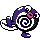

#060
Poliwag
Water
Abilities: Swift Swim, Damp, Water Absorb
Base stats BST 300
HP40
Attack50
Defense40
Speed90
Sp. Atk40
Sp. Def40
Evolution
dbbw EVOLVE_LEVEL, 25, POLIWHIRLLevel-up learnset
LevelMoveType
Lv. 1PoundNormal
Lv. 1BubbleWater
Lv. 6HypnosisPsychic
Lv. 9Water GunWater
Lv. 15Rain DanceWater
Lv. 15DoubleslapNormal
Lv. 18BubblebeamWater
Lv. 24Body SlamNormal
Lv. 27Low KickFighting
Lv. 30Belly DrumNormal
Lv. 36Earth PowerGround
Lv. 39Hydro PumpWater
Lv. 54Double EdgeNormal